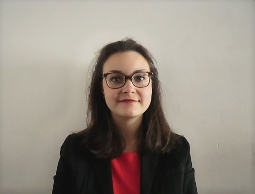

Bonjour !
Je m'appelle Antinéa Lombard et je suis étudiante à l'ISIT.
Je me prépare à une carrière dans le conseil multiculturel et l'aide au déploiement de stratégies marketing en une agence internationale.
En 2020, je serai diplômée d'un Master de Communication interculturelle et de Traduction et je recherche un CDD de Project Manager. J'ai réalisé une année de césure entre mes deux années de master, au cours de laquelle j'ai travaillé en tant que Cheffe de projet pendant 14 mois en France et au Royaume-Uni.
J'aime les séjours longs dans les villes étrangères qui me permettent d'en découvrir la culture et les arcanes. Je planifie actuellement un road trip dans la péninsule des Balkans pour en découvrir les pays que je ne connais encore que très peu.
J'ai par ailleurs aussi un goût prononcé pour le théâtre, notamment pour les mises en scène contemporaines audacieuses de pièces du répertoire classique.
Ceci est un mémo pratique non exhaustif concernant l'usage de HTML5 en traduction de sites web, élaboré pour mon usage en propre pendant mes études à l'ISIT et que je partage ici volontiers.
Page W3schools.com pour la mise en forme des listes
Link to Wikipedia about hexadecimal colors